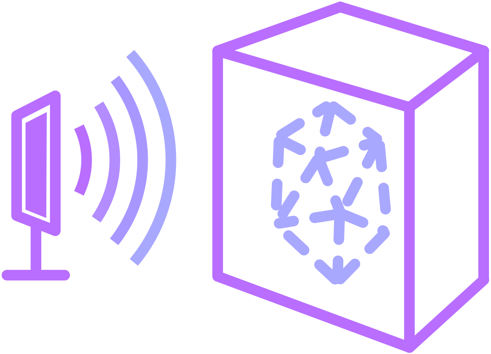
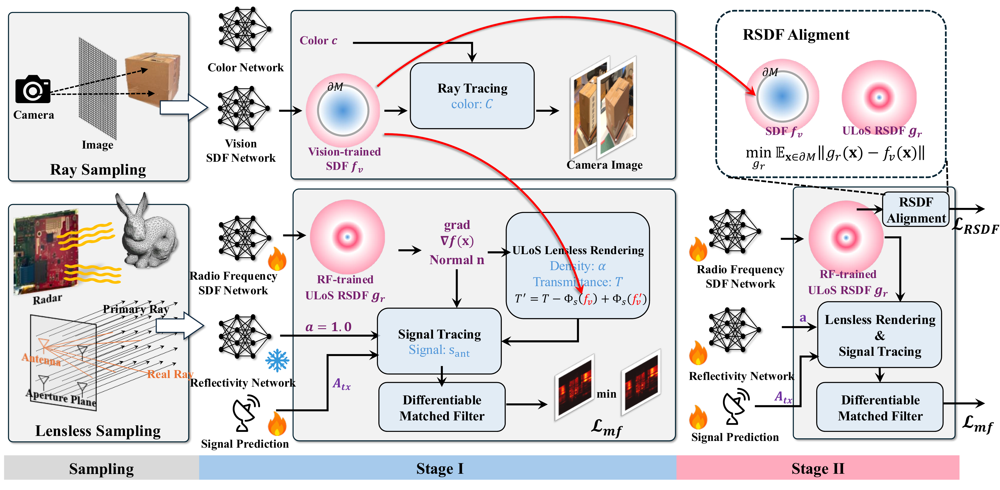
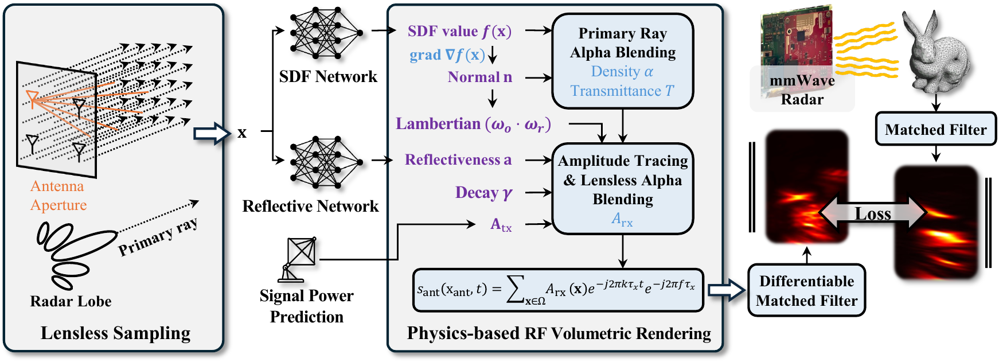

Seeing through boxes: Non-Line-of-Sight 3D Reconstruction from Radar Signals

Abstract: Modern vision methods reconstruct 3D geometry from multi-view images with remarkable fidelity — but they fundamentally cannot see objects that are hidden from view. We present GeRaF 2.0, a framework for non-line-of-sight 3D reconstruction that uses millimeter-wave radar to image objects sealed inside an opaque box. Because radio-frequency signals penetrate common materials cheaply and safely, radar recovers both the enclosing box and the object inside it. Unlike a camera, a radar array has no aperture — a lensless imaging regime in which the raw signal is indistinguishable from noise. GeRaF 2.0 casts radar reconstruction as a differentiable, physically grounded rendering problem: we sample points along rays, predict a unified line-of-sight signed distance function with an MLP, and simulate the FMCW radar signal to compare against the measured radar image. To resolve the surface-level ambiguity inherent to mixed line-of-sight and non-line-of-sight regions, we anchor the geometry by enforcing consistency between vision- and radar-derived SDFs in the shared line-of-sight region. GeRaF 2.0 recovers accurate surfaces and shapes for both the outer box and the enclosed object.
Abstract: GeRaF is the first method to use neural implicit learning for near-range 3D geometry reconstruction from radio frequency (RF) signals. Unlike RGB or LiDAR-based methods, RF sensing can see through occlusion but suffers from low resolution and noise due to its lensless imaging nature. While lenses in RGB imaging constrain sampling to 1D rays, RF signals propagate through the entire space, introducing significant noise and leading to cubic complexity in volumetric rendering. Moreover, RF signals interact with surfaces via specular reflections, requiring fundamentally different modeling. To address these challenges, GeRaF (1) introduces filter-based rendering to suppress irrelevant signals, (2) implements a physics-based RF volumetric rendering pipeline, and (3) proposes a novel lensless sampling and lensless alpha blending strategy that makes full-space sampling feasible during training. By learning signed distance functions, reflectiveness, and signal power through MLPs and trainable parameters, GeRaF takes the first step towards reconstructing millimeter-level geometry from RF signals in real-world settings.


Click any thumbnail to open the 3D viewer — translucent outer box, solid object inside.
Box + hidden bunny.
Box + hidden bunny.
Box + hidden chicken.
Box + hidden deer.
Box + hidden elephant.
Box + hidden kiwi bird.
Box + hidden ball.
Box + hidden boat.
@inproceedings{lu2026seeing,
title = {Seeing through boxes: Non-Line-of-Sight 3D Reconstruction from Radar Signals},
author = {Lu, Jiachen and Shanbhag, Hailan and Al Hassanieh, Haitham},
booktitle = {Proceedings of the IEEE/CVF Conference on Computer Vision and Pattern Recognition (CVPR)},
year = {2026}
}@inproceedings{lu2025geraf,
title = {GeRaF: Neural Geometry Reconstruction from Radio-Frequency Signals},
author = {Lu, Jiachen and Shanbhag, Hailan and Al Hassanieh, Haitham},
booktitle = {Advances in Neural Information Processing Systems (NeurIPS)},
year = {2025}
}This work was supported by the Sony Faculty Innovation Fellowship. This page is built on the academic project page template.